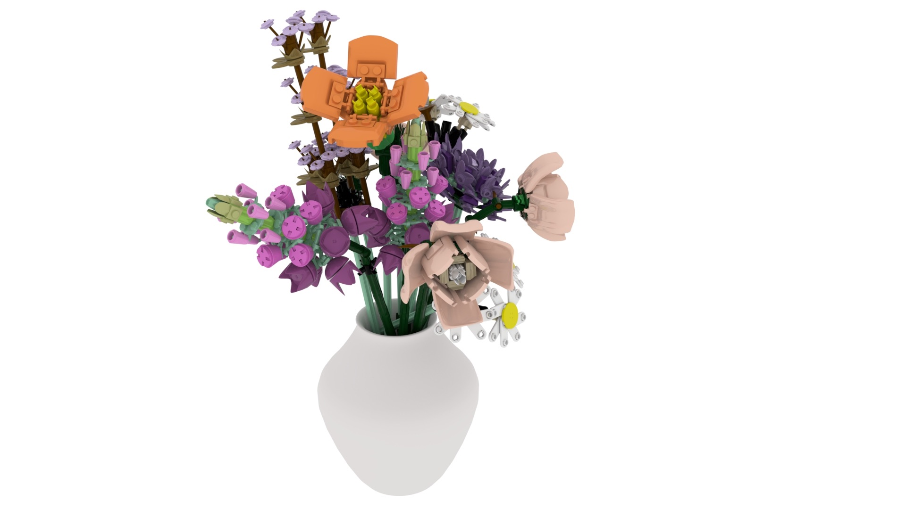
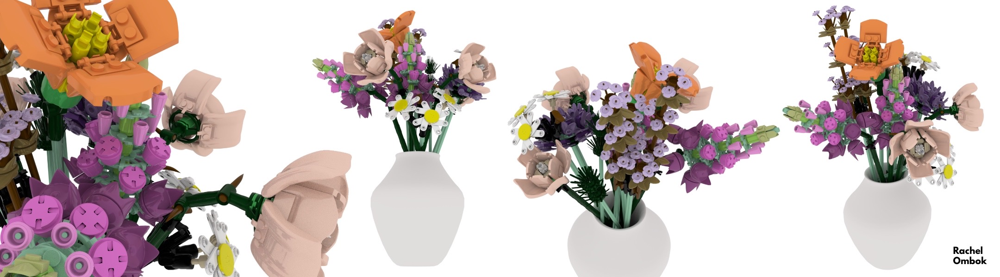

In this course, students learn to produce and render high-quality 3D models, and upon completion of this course, students will have a solid understanding of the fundamentals of modeling, texturing, animation and lighting using industry-standard software. Students may create content for video games, web, film, or other interfaces.
Lego Flower Bouquet
Squid Game Doll
Develop one polygnal model, usually a character or inanimate object. If the object is a character, it can either be an original or a pre-existing character. One of the primary goals of this project is learning how to keep topology clean.
I decided to model the Lego Flower Bouquet build because the blocks of the model are very geometric and would be simple to model. There were pieces that could be reused and duplicated throughout the project. I also owned a Lego Bouquet in real life, so it made it that much easier to model and create.
The entire model was made with primitive polygons in Autodesk Maya. It took around 3 weeks to model all the flowers and pieces in the project, and then afterwards I moved on to texturing and creating UV Map for the bouquet. The color map and texturing were relatively easy, since every piece had the same, plastic like texture and smooth surface. I used Arnold to render and texture each piece of lego.
 In this project, we used ZBrush to model a simple character. The character must be pre-existing, and have a relatively simple design. Modeling and color is done in ZBrush, then Maya and Arnold are used for lighting and rendering of final images.
I chose to model the Squid Game Doll from the hit Netflix Original Series Squid Game. I chose this character because I really enjoyed the show, and thought it would be a cool, but relatively easy 3D model to create for this assignment.
Similar to the Lego Bouquet Model, the Squid Game Doll model had really one texture and surface throughout, a sort of porcelain texture that was a bit shiny in some places, and muted in others. For this project I used around 6 different subtools, for each part of her body (head, dress , legs, arms, and collar), and also had different Polygroups for each of these sections as well. I used ZBrush's built in PolyPaint tool to color her, and then created a UV Map so that I could export the texture to use in Maya. From my model I created a .obj file that I imported into Maya, and then rendered the finished product using Arnold.